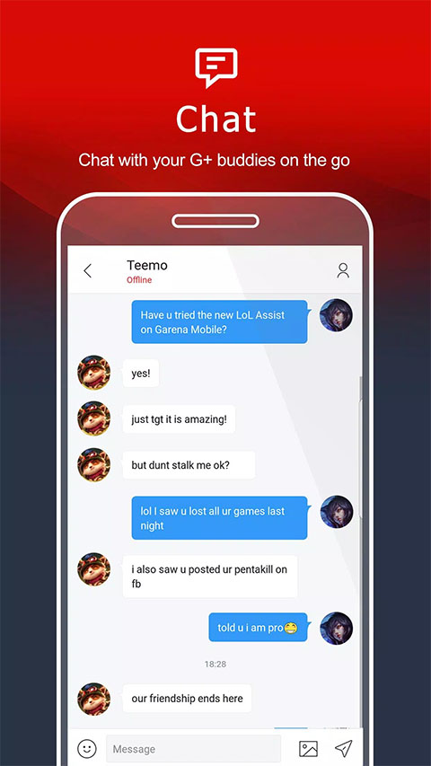

通勤路上约开黑，Garena 手机端把我从群聊拉回游戏
被朋友拉进开黑群却总因通勤错过消息，直到装上 Garena 随行端——跨端聊天让我在地铁上就能和电脑前的队友无缝对接，还顺手补上了被 Google Play 下架后的安装姿势。
地铁里的开黑信号
去年冬天的某个晚上，我挤在末班车里刷着微信，群里已经炸了。三个室友在宿舍开黑《英雄联盟》，从下午六点喊到八点半，我一直在加班。等我出了写字楼，他们已经连输两把，语气里带着那种想继续又怕太晚的犹豫。
"上 Garena 发消息。"其中一个突然说，"微信消息电脑响不出来，Garena 我们都挂着。"
我之前只知道 Garena 是游戏平台，电脑上装过一次又嫌占空间删了，手机端压根没碰过。那天晚上我在地铁里用了三分钟装上它，注册，加好友，然后在摇摇晃晃的车厢里把语音开了起来。室友们的声音从听筒里传出来，带着宿舍电脑风扇的嗡嗡声，我第一次意识到——原来我不用坐在电脑前，也能跟上这场局。

被下架这件小事
装 App 之前我踩了个小坑。打开手机应用商店搜 Garena，什么都没有。第一反应是自己记错了名字，翻了三遍拼写确认无误，才想起一个朋友提过——Garena 的手机端在 Google Play 已经下架了。
我翻了下搜索结果才弄清楚，2024 年中它从商店撤了，但这不代表应用没了，只是获取方式变了。第三方应用市场还在收录，一些整理站把安装包放进网盘分享，还有地区站点偶尔保留着下载引导页。从它的下载页面拿到的安装包信息，就是目前最稳妥的入口。
拿到安装包我没急着装，先核对了一下包名、版本号和体积——包名是 com.garena.gaslite，体积 20MB 出头，版本号 2.4.6.107。这些硬信息和整理站标注的对得上，没给通讯录、短信之类的多余授权，才点了安装。事后想起这步挺重要的，同一个应用名能搜到好几个来路不明的文件，核对一下基本能筛掉九成坑。
一分钟省掉的三周麻烦
注册完我就直接进了游戏房间，邮件验证那步被我跳了。当时心想反正密码记在备忘录里，哪会忘。结果过了两周，我手机丢了，换了新手机想重新登录，死活进不去——密码输对了说账号异常，走找回流程提示我"密码目前无法更改"。
折腾了一个小时翻文档，才搞明白原因：我注册时填了邮箱，但从来没点过验证链接。Garena 的自助找回只认"验证过"的安全信息，没验证的邮箱等于不存在。这种情况只能走人工申诉，等待周期长得我已经不抱希望了。最后靠绑定的手机号找回了，但那段时间我对着旧手机残骸骂自己为什么当初那一分钟都舍不得花。
现在我养成习惯了：注册任何服务，先验证邮箱、再绑手机，双保险的绑法一步都不省。现在我能体会Garena文档里说的"性价比极高"是什么意思——一分钟的事，省掉的可能是数周的焦虑。
通勤上的游戏助理
跑通之后，Garena 手机端成了我通勤路上的常驻应用。它最实用的能力是跨端聊天——电脑上挂着 Garena 的室友，和我地铁里用手机发的消息，共享同一条聊天记录。我在路上约好今晚开黑的时间，他们在电脑上收到就顺手把游戏开了；他们游戏里进了新房间，我手机端的消息照样能收到，等我到家洗完澡直接进房间就行。
这种感觉很微妙：之前用微信传消息，电脑端要么开着微信 PC 版才能响，要么室友得频繁低头看手机；现在 Garena 两端同步，他们只管在电脑前玩，我只管在路上看消息，互不干扰。消息记录也是通的，白天电脑上聊到一半的事，晚上换手机接着说，上下文一点不丢。
它的官网上对这款随行端的定位说得挺克制——不替代日常聊天工具，只是把游戏相关的人和事闭环在自己这里。该用微信跟爸妈唠家常还是唠，该用 Garena 跟队友约战就用 Garena。边界感清楚了，反而不会混淆。

一点零碎的使用感受
用了大半年，Garena 随行端给我的感觉是"够用就好"。它不像那些花哨的社区 App 那样堆功能，核心就是两件事：跨端聊天和账号随行。转盘奖励偶尔能抽到几个游戏道具，聊胜于无；社区板块我用得少，主要还是聊天约战。
改密码的时候两端都会被踢下线，安全逻辑是对的，就是得记着两边都要重新登。消息送达依赖对方在线状态，电脑端挂着但人不在的话，消息会留存着等他回来，这一点倒是比某些即时通讯软件靠谱。
我之前总觉得"游戏平台 App"是给重度玩家准备的，自己这种碎片时间玩两把的人用不上。但一个通勤路上约开黑的场景，就让我成了它的常客。工具的价值有时候就是这样——不用多全面，刚好补上你漏掉的那个口子就够了。
如果你也在找 Garena 的手机版，或者想了解更多跨端聊天和账号安全的细节，这些资料在三个仓库都有备份：GitHub上内容最完整，Gitee访问更顺畅，GitCode也留了一份便于代码搜索。三个仓库内容同步，挑哪个顺手就用哪个。